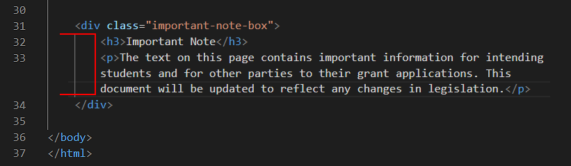
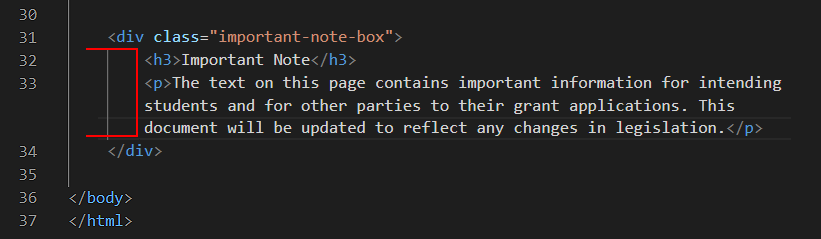
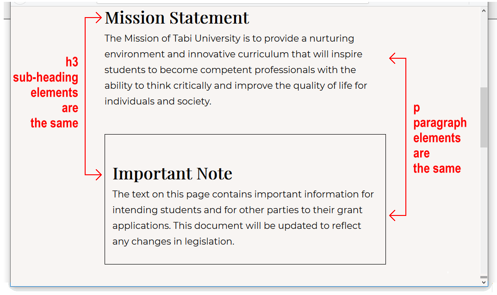
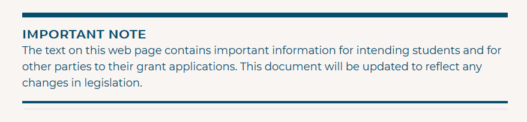
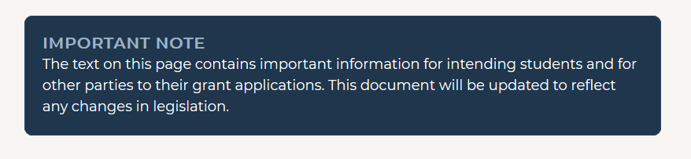

Learning Goals
At the end of this Tutorial you will be able to:
- Create and style <div> ... </div> tags for use as panels in a web page.
- Apply two separate CSS classes to a panel <div> ... </div>: one for basic layout and the other for visual effect.
You can view the finished version of the page-9.html sample web page you will create in this Tutorial by clicking the links below. The finished sample will open in a new tab of your web browser.
You will also update your website home web page with a hyperlink to your new sample web page.
About ‘panels’ in web pages
In web design, the word panel is used to describe a small rectangular area of a web page. Panels typically contain a sub-heading, a short block of text, an image or a video.
For example, here are four panels from the home page of YouTube.
 And here are more examples of panels from three sample web projects you will complete later in this course.
And here are more examples of panels from three sample web projects you will complete later in this course.

In the above examples, most or even all of the web page content consists of panels.
A second use of panels is to highlight a particular item of information within a web page. Such a highlighted panel might contain:
- Some extra information about the main topic of the web page. In Wikipedia, for example, the highlighted box below would be considered a panel.

- Some really important information that the user must know about.

- A system notice such as a confirmation or an error message.

In this Tutorial, you will learn how to use the <div> ... </div> tag to create and design panels in a web page.
Working with your sample web page
You will work with these two files:
- The page-9.html web page, which contains the student-computer-screen.jpg image.
- The style-9.css stylesheet.
You downloaded and unzipped these three files in the previous Tutorial.
Display the page-9.html web page in your Chrome or Mozilla Firefox Developer Edition browser. It should look as shown below.

Editing your sample web page
Open the page-9.html web page and the style-9.css stylesheet files in VS Code
Let's begin by editing the page-9.html file.
- Near the bottom of the web page, just before the closing </body> tag, you can see a <div> element with a class name of important-note-box.
 Use the Tab key to indent the two child elements (a sub-heading and a text paragraph) of this div from the left edge of the screen. See below.

Indenting the child elements helps you see where the parent element begins and ends.
Use the Tab key to indent the two child elements (a sub-heading and a text paragraph) of this div from the left edge of the screen. See below.

Indenting the child elements helps you see where the parent element begins and ends.

- Copy this important-note-box <div> element and paste it three times on the web page, one <div> element under the other.
You should now have four <div> blocks in your web page. All have the same class name of important-note-box.

- Save your HTML file.
Styling your panel boxes
Follow these steps to update the stylesheet that controls the appearance of your page-9.html web page.
- In VS Code, switch to the style-9.css stylesheet. At the top of the file, you can see the following web browser resets.
* { padding: 0; margin: 0; border: none; box-sizing: border-box }
img { display: block; width: 100%; height: auto }
- At the bottom of the stylesheet, copy-and-paste the following new CSS style selector and declaration.
.important-note-box {
margin: 54px 0;
padding: 16px;
border-style: solid;
border-width: 1px;
border-color: #000;
}
- Save the CSS file, and view your web page in your web browser. It should look as shown below.
 As you can see:
As you can see:
- All four panel boxes now have a black, one-pixel wide border around them. This is what you want.
- Unfortunately, the <h3> and <p> child elements inside the panel boxes have the same font and spacing CSS values as the sub-headings and paragraphs outside the panel boxes. This is not what you want.

Let's fix this.
- At the bottom of the stylesheet, copy-and-paste the following new CSS style selector and declaration.
.important-note-box h3 {
font-family: 'Montserrat', sans-serif;
font-size: 20px;
margin-top: 0;
margin-bottom: 2px;
letter-spacing: 1px;
text-transform: uppercase;
}
Because of the parent-child selector combination of .important-note-box h3, this set of style rules applies only to <h3> sub-headings that are inside a panel box <div> with that class name.
No other <h3> sub-headings on the web page are affected.
- At the bottom of the stylesheet, copy-and-paste the following new CSS style selector and declaration.
.important-note-box p {
font-size: 18px;
line-height: 1.5;
margin-bottom: 0;
}
Because of the parent-child selector combination of .important-note-box h3, this set of style rules applies only to paragraphs of text that are inside a panel box <div> with that class name.
No other <p> text paragraphs on the web page are affected.
- Save the CSS file, and view your web page in your web browser. All four panel boxes should look like the one shown below.

Adding visual effects to your panel boxes
In this final section, you will apply different visual styles to each of the four panel boxes on your page-9.html web page.
- Your first step in applying four different visual styles is to create four new class names, and apply a different class name to each of the four panel boxes.
In VS Code, open your page-9.html web page, and add the second class name of box-style-1 to the first panel box as shown below.
<div class="important-note-box box-style-1">
- Repeat this step for the three other panel box <div> elements, increasing the number in the class name each time. Your HTML file should now look as shown below.

- The existing important-note-box class will be used for ‘basic’ styles such as top and bottom margins, and font-family and font-size.
- The new box-style-1 class and similar classes will be used for ‘fancy’ styles such as text, border and background colours to give each box a distinctive visual appearance.

- Save your HTML file.
- In VS Code, switch to your style-9.css stylesheet. The visual effect you want to achieve for the first panel box is shown below.
 At the bottom of your stylesheet, copy-and-paste these two new selectors and declaration blocks.
At the bottom of your stylesheet, copy-and-paste these two new selectors and declaration blocks.
.important-note-box.box-style-1 {
border-color: #1FA441;
background-color: #E4F5E8;
box-shadow: 8px 10px 8px #888;
}
.important-note-box.box-style-1 h3 { color: #1FA441 }
- Now for the second of the four panels. Here is the visual effect you want.

At the bottom of your stylesheet, copy-and-paste these three new selectors and declaration blocks.
.important-note-box.box-style-2 {
padding: 16px 0 16px 0;
border-width: 8px 0 4px 0;
border-color: #044E6C;
}
.important-note-box.box-style-2 h3 { color: #044E6C }
.important-note-box.box-style-2 p { color: #044E6C }
- You want your third panel box to look as follows.
 At the bottom of your stylesheet, copy-and-paste this new selector and declaration block.
At the bottom of your stylesheet, copy-and-paste this new selector and declaration block.
.important-note-box.box-style-3 {
border-width: 0 0 0 20px;
border-left-color: #E66465;
background-color: #FFE7E8
}
- You want your fourth and final panel box to look as shown below.

At the bottom of your stylesheet, copy-and-paste these three new new selectors and declaration blocks.
.important-note-box.box-style-4 {
padding: 22px;
border-radius: 10px;
border-color: #2c4763;
background-color: #1f364d;
}
.important-note-box.box-style-4 h3 { color: #9cb3c9 }
.important-note-box.box-style-4 p { color: #fff }
- Save the CSS file, and view your web page in your web browser.
Click page-9.html to view a finished sample of this web page in a new tab of your web browser.
Updating the content of your home page
Now that you have created and styled the four panels in your new web page, let’s add a hyperlink to this new page to the home page of your web site.
- In VS Code, open this HTML file in your websites folder:
index.html
Its content should look as follows:

- Copy-and-paste the following new line to your web page, directly under the line that contains the link to the page-8.html web page.
<p><a href="page-9.html">Web Page with Panels</a></p>
Save your index.html web page and view the result in your browser.
Uploading your files to GitHub
Upload the following web pages and stylesheet to your account on GitHub:
index.html
page-9.html
style-9.css
Your web pages will be published at web address similar to the following:
https://username.github.io/index.html
https://username.github.io/page-9.html
It may take a few minutes for your uploaded files to appear on GitHub.
Return to Contents.